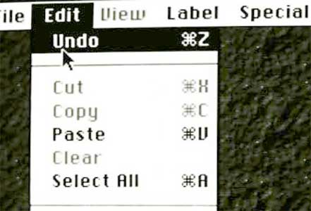
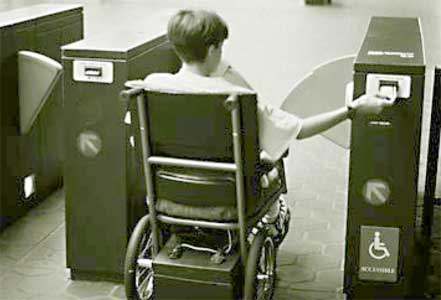

Your browser doesn't support the features required by impress.js, so you are presented with a simplified version of this presentation.
For the best experience please use the latest Chrome, Safari or Firefox browser.
By Arne Hassel
Universell utforming er utforming av produkter og omgivelser på en slik måte at de kan brukes av alle mennesker, i så stor utstrekning som mulig, uten behov for tilpasning og en spesiell utforming.
Med universell utforming menes utforming eller tilrettelegging av hovedløsningen i de fysiske forholdene, inkludert informasjons- og kommunikasjonsteknologi (IKT), slik at virksomhetens alminnelige funksjon kan benyttes av flest mulig.
«Universal design» means the design of products, environments, programmes and services to be usable by all people, to the greatest extent possible, without the need for adaptation or specialized design. “Universal design” shall not exclude assistive devices for particular groups of persons with disabilities where this is needed.
Convention on the Rights of Persons with Disabilities (2006)
Universell utforming innen IKT betyr at produkter og tjenester skal utvikles slik at alle mennesker i en gitt målgruppe skal kunne bruke teknologien på en hensiktsmessig måte.
The design is useful and marketable to people with diverse abilities.
The design accomodates a wide range of individual preferences and abilities.
Use of design is easy to understand, regardless of the user's experience, knowledge, language skills or current concentration level.
The design communicates neccessary information effectively to the user, regardless of ambient conditions or the user's sensory abilities.
The design minimizes hazards and the adverse consequences of accidental or unintended actions.
The design can be used efficiently and comfortably and without a minimum of fatigue.
Appropriate size and space is provided for approach, reach, manipulation, and use regardless of user's body size, posture, or mobility.
"Most for most"
("Mest mulig for flest mulig")
Nye IKT-løsninger skal være universelt utformet. Denne plikten inntrer tolv måneder etter at det foreligger standarder eller retningslinjer for innholdet i plikten, jf. fjerde ledd. Alle IKT-løsninger skal være universelt utformet fra 1. januar 2021. Håndhevingsorganet utpekt etter § 29 kan gi dispensasjon fra fristene dersom det foreligger særlig tungtveiende grunner.
Forskrift om universell utforming av IKT-løsninger stiller krav om at nettsider må oppfylle 35 av i alt de 61 suksesskriteriene i WCAG 2.0. Dette vil si alle kriterier på nivå A og AA, unntatt suksesskriteriene 1.2.3 Synstolking eller mediealternativ (forhåndsinnspilt innhold), 1.2.4. Teksting (direkte) og 1.2.5. Synstolking (forhåndsinnspilt)
Krav til nettløsninger (uu.difi.no)
The minimum level of conformance.
The required level of conformance.
The maximum level of conformace.
Web Content Accessibility Guidelines (WCAG) 2.0
We are required to meet 35 of these.
Authoring Tool Accessibility Guidelines (ATAG) 2.0
Important in our authoring tools, but not required by Difi.
User Agent Accessibility Guidelines (UAAG) 2.0
We don't need to heed these.
Plugin for Firefox, easing use of the tool.
MediaLT offers services for this